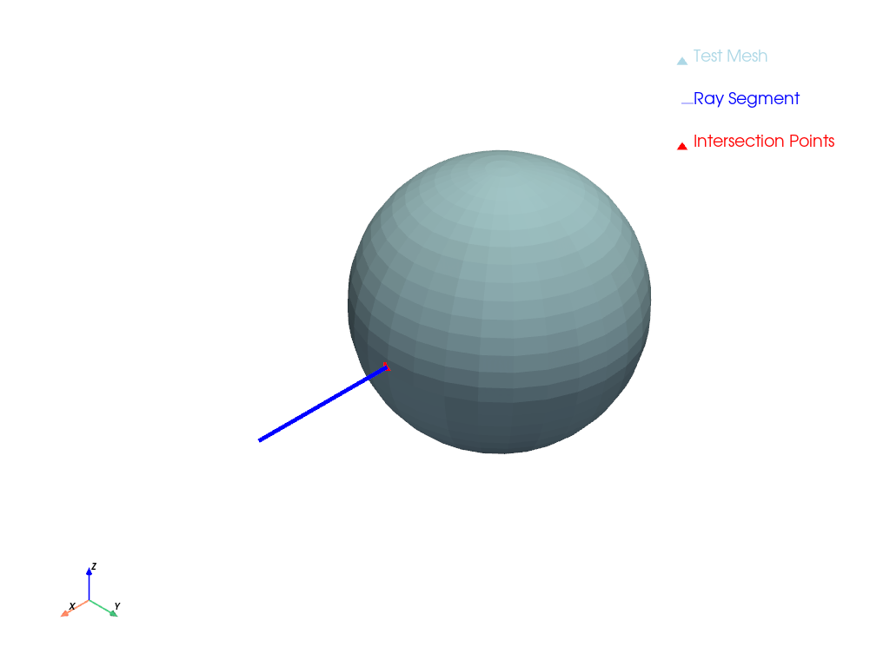

pyvista.PolyDataFilters.ray_trace#
- PolyDataFilters.ray_trace( )[ソース]#
単一のレイトレース計算を実行します．
これには，原点とend_pointで定義されたメッシュとラインセグメントが必要です．
- パラメータ:
- 戻り値:
- intersection_points
numpy.ndarray 交点の位置．交差がない場合は空の配列．
- intersection_cells
numpy.ndarray 交差セルのインデックス．交差がない場合は空の配列．
- intersection_points
例
原点から
[1, 0, 0]への光線と，原点を中心とする半径0.5の球との交点を計算します．>>> import pyvista as pv >>> sphere = pv.Sphere() >>> point, cell = sphere.ray_trace([0, 0, 0], [1, 0, 0], first_point=True) >>> f'Intersected at {point[0]:.3f} {point[1]:.3f} {point[2]:.3f}' 'Intersected at 0.499 0.000 0.000'
レイトレースのプロットを表示します．
>>> point, cell = sphere.ray_trace([0, 0, 0], [1, 0, 0], plot=True)
このフィルターを使用したその他の例については， レイトレーシング を参照してください．
